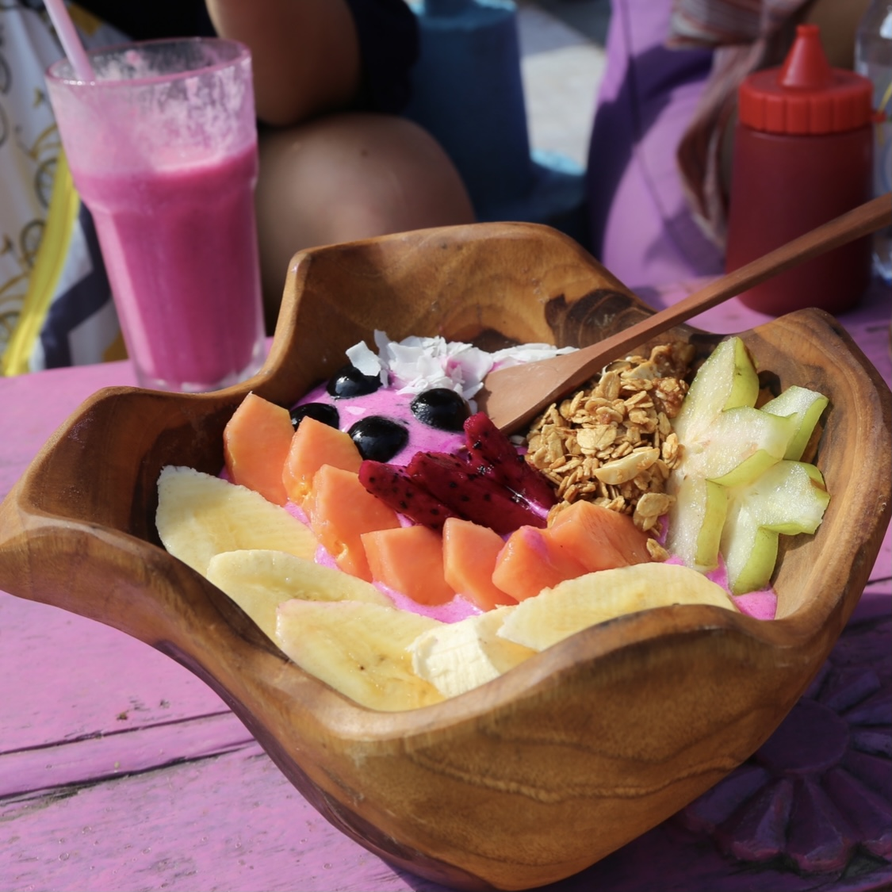
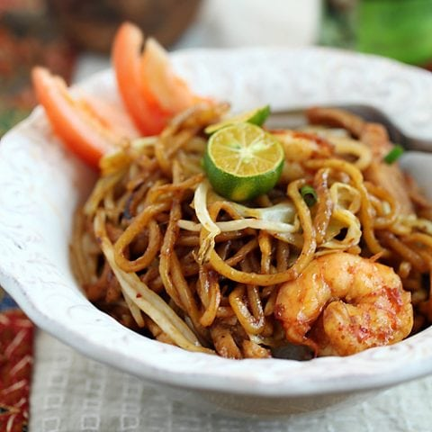
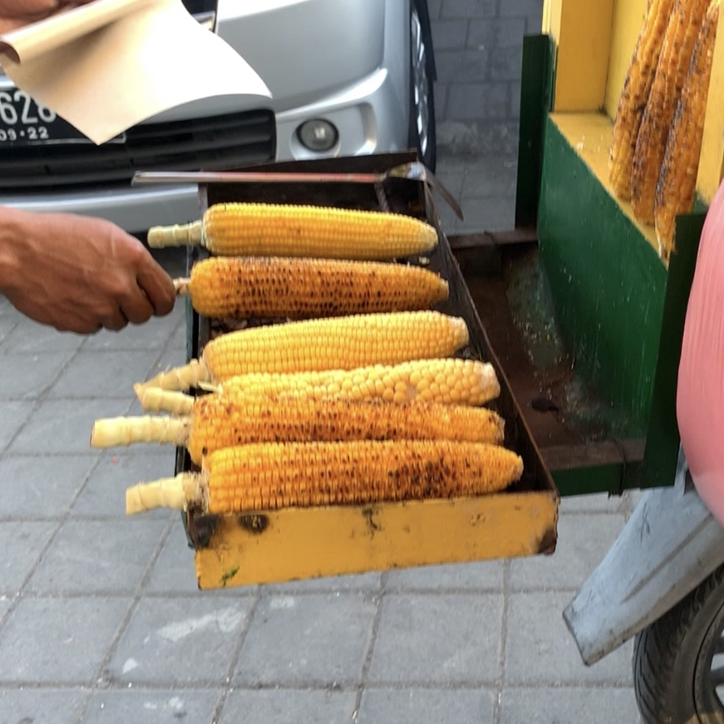

|

|
Acai Bowls
You HAVE to get an Acai or Pitaya
bowl if you're travelling to Bali. They have the freshest fruits. If
you find yourself in the center of Bali, there are tons of places.
The shops in Ubud are the best, however, it can get pretty
expensive. They carry the traditional bowls, but they have all sorts
of fruit bowls, you should definitely try all the fruits they have
to offer.
|
|

|
Mie Goreng
Mie Goreng, is an iconic traditional
Indonesian food! Its a fried crispy noodle dish with different
variations such as shrimp, chicken, tofu,.. the options are endless!
You can find this on the menu pretty much anywhere on the island, or
all of indonesia and similar places like malaysia. Beware, it can
get pretty spicy sometimes!
|
|

|
Street Corn
Another key food to try is Street
Corn! Maybe it's just me, but I love corn, so I definitely enjoyed
an ear of corn while I was out shopping. Its usually about $2
depending on where you go, but they're pretty popular in touristy
areas. They not only have a delicious butter but also have a super
good spice that you can add. Underrated, but a must have!
|